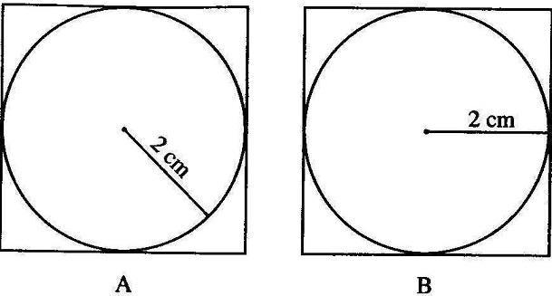
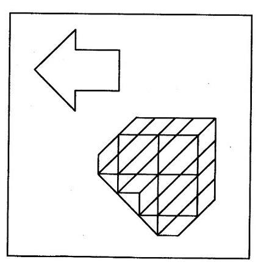
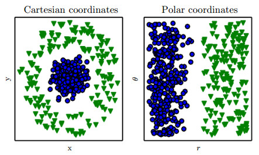

同一个问题，换一种表述，难度就会不同。这一篇想说明：问题怎么被呈现，决定了解决它要走多远的路。
这个系列的起点，是人教版《普通心理学》里一篇叫《影响问题解决的因素》的短文。文中列了七种因素，每一种都可以单独拿出来玩味很久：
背景的线里藏着一个箭头。移动鼠标（或用手指拖动），拨开无关的线。
原文的第一个例子：已知圆的半径是 2 cm，求它的外切正方形的面积。图 A 和图 B 是同一道题，只是半径画的方向不同：A 斜着指向右下，B 水平指向右边。为什么 B 比 A 容易？
拖动橙色半径的端点，或用键盘方向键旋转。

原文的解释是：问题情境中的刺激模式，与个人知识结构的接近程度不同。关键是“正方形边长等于半径的两倍”。B 的画法让人一眼看出 2 cm 是边长的一半；A 的画法则要求你先在脑中搜出另一个知识点，圆心到圆上任何一点的距离都是半径，把 A 等价转换成 B，再得出同样的结论。
多出来的这一步，就是难度的差别。这其实把我们平时说的“直观”“直白”具体化了：直观，就是少走一步。
第二个例子是在一张复杂图形里找出一个简单图形：左上角那个空心箭头，就藏在右下那块画满网格和斜线的图形里。它想说明，不仅信息过少会让问题变难，信息过多也会。
下面按原图的做法生成新的题目：箭头的每条边都落在网格线或 45° 斜线上，周围的线一穿过去，它的轮廓就融进了整块图形。调高“无关线条”，看你找到它要多久，每一轮的用时都会记在右边的图上。

“过多的信息”是指什么？我认为不是冗余的信息，而是无关的信息。箭头以外那些网格和斜线，和“找到箭头”这个任务没有关系，却一直在干扰你；解决问题的过程中，你得持续抵抗这种干扰，难度自然上升。
而右边那个“染色”开关是另一种多出来的信息：它和任务相关，而且是冗余的（形状已经够你找到它了）。打开它，用时通常会一下子掉下来。
到这里可以说明一个观点：在某种程度上，所有定义明确的问题都可以视为一个搜索问题。问题往往要拆成子问题，解决所有子问题并到达答案的过程，就像在一棵树（或一张网）里找一条通往解的路径。每到一个节点，你都要从几个子节点里挑一个往下走。
下面这棵树里，绿色圆圈是答案。每个节点的深浅，是你对“从这里走能到答案”的估计。虚线圆圈表示估计值低于决策阈值，你没有理由优先选它。
原文关于问题情境一共提了三点：正方形和找箭头分别解释了后两点。第一点关于空间位置，再泛化一点，就是元素之间的某种距离（大小、形状、颜色、空间、时间），也就是一些可量化的相关关系。
原文最后放了一张《Deep Learning》里的图：同一个分类问题的两种表示。机器学习里，这叫表示（representation）；放在这个系列里，它就是问题情境。
两类点：蓝色圆点聚在中心，绿色三角围成一圈。你的任务是画一条直线把它们分开。拖动直线两端的圆点试试，再切换到极坐标，看点怎么移动到原图右边的样子。

在笛卡尔坐标里，蓝点被绿色三角整个包住，无论直线怎么摆都分不干净；换成极坐标，横轴是到中心的距离 r，一条竖线就把两类分开了。数据没有变，变的只是看它的方式。对一个只会画直线的“解题者”来说，表示方式决定了这道题是不可能，还是一眼就能解。
问题情境和设计有什么关系？我这里说的设计，去掉了一般理解里艺术、美学的那部分，更接近可用性（Usability）：用互联网产品的分类来说，更偏交互而非视觉。这种设计的目的就是问题的解决。
拿软件交互设计来说，死磕的其实就是如何通过各种可交互的元素，传达出合适的信息，为每一个功能形成一条最佳路径。回头看上面几张图：把半径画成水平，是在帮用户省掉一步；去掉无关的线条、给目标染色，是在降低干扰、增加相关的冗余；换一种表示，是让本来走不通的路变成直线。
当然，这个“最佳”可能是极致的可用，也可能是更复杂的价值函数，比如还要考虑软件商的盈利。这让现实中的交互设计非常有挑战。至于价值函数，那是第四篇的事了。